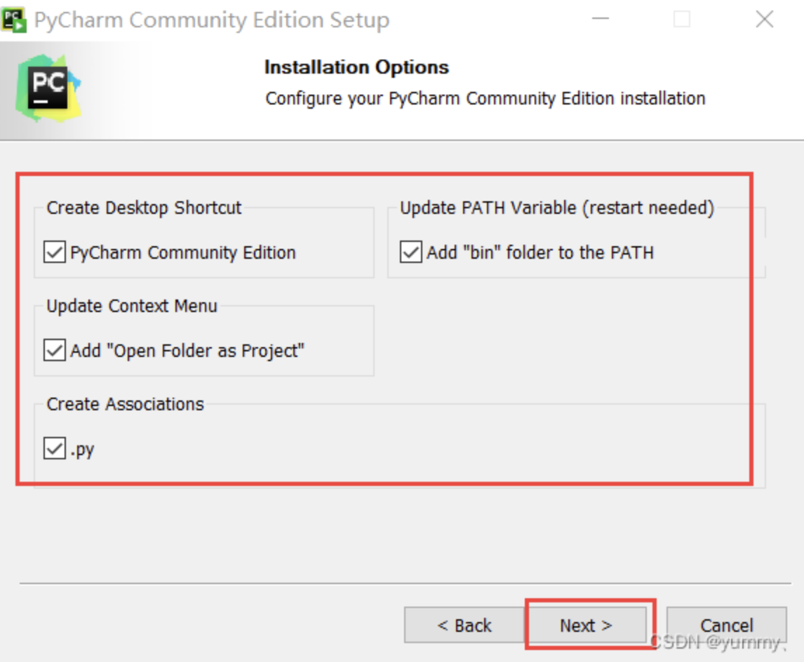
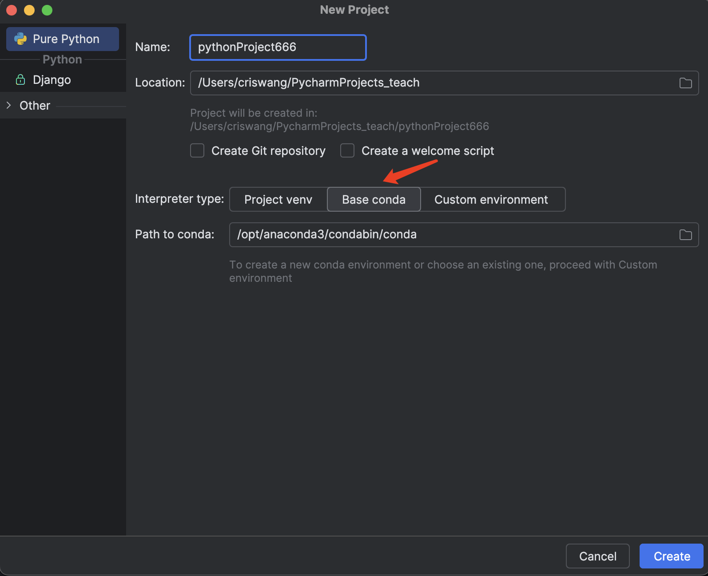
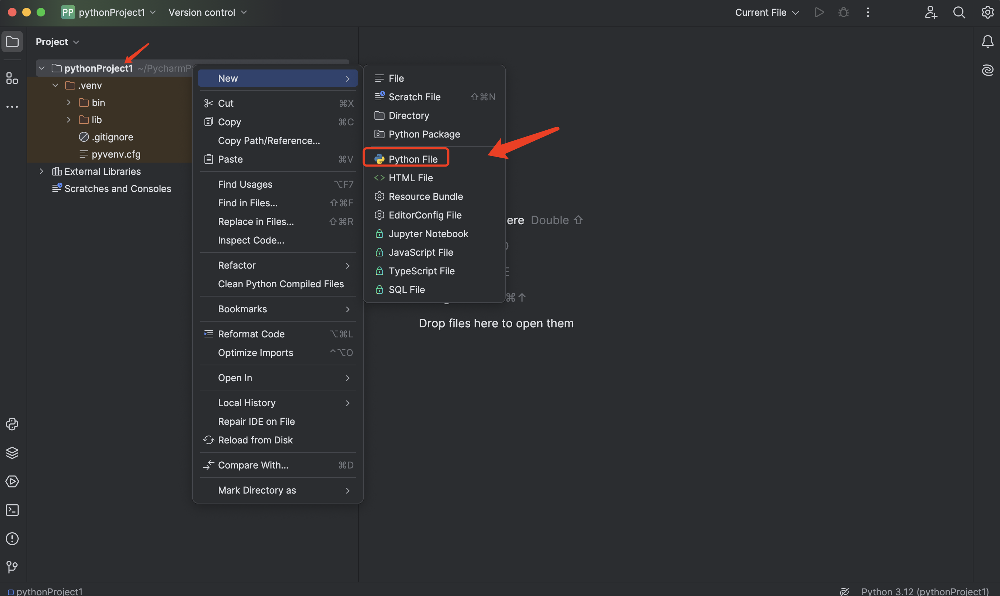
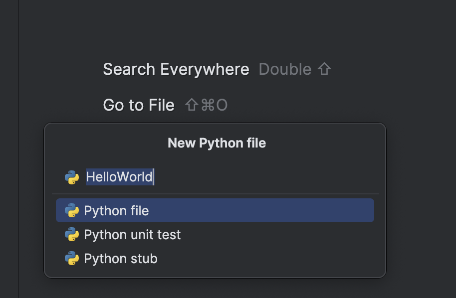
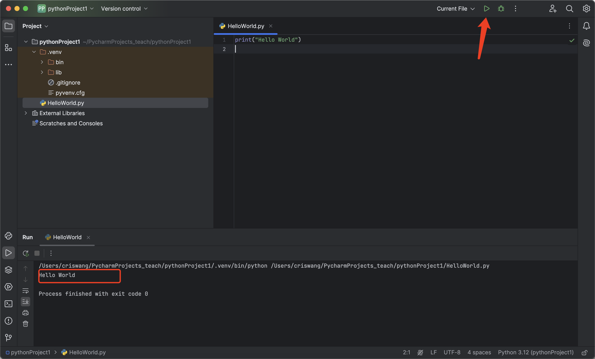

Lesson 1 Python的环境设置、数据类型、运算符和输入和输出
Contributors

目录
- 前言：为什么要学习Python
- 1. Python环境设置
- 2. 第一个程序：Hello World！
- 3. Python常用的开发环境（IDE）
- 4. Python中的标识符
- 5. Python中的变量
- 6. Python的数据类型
- 7. Python中的运算符
- 8. Python的输入与输出
- 9. 课程总结
- 课后练习
前言：为什么要学习Python
- 易于学习：Python语法简单，适合初学者。
- 应用广泛：可用于数据分析、网站开发、自动化等。
- 丰富的库支持：提供大量现成的工具和功能，方便快速开发。
1. Python环境设置
1.1 为什么选择Anaconda
- 方便安装： 安装 Anaconda就像安装一个应用程序一样简单，它为您预先安装好了许多常用的工具，无需单独配置。
- 包管理器： Anaconda 包含一个名为 Conda 的包管理器，用于安装、更新和管理软件包。Conda 不仅限于 Python，还支持多种其他语言的包管理。
- 环境管理： 使用 Anaconda，您可以轻松地创建和管理多个独立的 Python 环境，然后实现自由切换。这对于在不同项目中使用不同的库和工具版本非常有用，以避免版本冲突。
- 集成工具和库： Anaconda 捆绑了许多用于数据科学、机器学习和科学计算的重要工具和库，如 NumPy、Pandas、Matplotlib、SciPy、Scikit-learn 等。
- Jupyter 笔记本： Jupyter 是一个交互式的计算环境，支持多种编程语言，但在 Anaconda 中主要用于 Python。它允许用户创建和共享包含实时代码、方程式、可视化和叙述文本的文档。
- 跨平台性： Anaconda 可在 Windows、macOS 和 Linux 等操作系统上运行，使其成为一个跨平台的解决方案。
- 社区支持： Anaconda 拥有庞大的社区，用户可以在社区论坛上获取帮助、分享经验和解决问题。
1.2 Anaconda 安装
Anaconda 安装包下载地址：https://www.anaconda.com/download。
Anaconda 可在 Windows、macOS 和 Linux 等操作系统上运行，你可以根据不同平台下载安装包：

1.2.1 macOS 平台
安装过程也很简单，双击打开下载的安装包，选择 Install for me only:

点击 install 按钮：

安装完成后，点击 Continue 按钮，接下来就可以看到安装完成的界面：


macOS 平台安装可以参考官网：https://docs.anaconda.com/free/anaconda/install/mac-os/
1.2.2 Win 平台
Win 平台与 macOS 类似，在下载安装包后，双击安装包，同意一些协议，简单的就可以按默认设置一步步按 Next 按钮就可以。
选择安装目录：

在 "Advanced Installation Options" 中不要勾选 "Add Anaconda to my PATH environment variable."（"添加Anaconda至我的环境变量。"），因为如果勾选，则将会影响其他程序的使用。

点击 Install 按钮进行安装，安装成功出现如下界面：

点击 Next 按钮：

Win 平台安装可以参考官网：https://docs.anaconda.com/free/anaconda/install/windows/
1.2 Pycharm安装
我们直接打开pycharm官网进行下载安装：https://www.jetbrains.com/pycharm/download/
页面往下滑到底，下载这个免费的社区版，
mac用户只需下载后进行拖拽安装就可以打开了。
如果是win用户，安装时需要注意自己的安装位置（如果C盘太小不建议放C盘，一般选择64位安装，根据自己电脑实际需求），其他选项一般默认即可。
直接打开Pycharm，或者在Anaconda中打开Pycharm社区版
一般第一次打开我们新建一个项目就可以，一个项目是一个文件夹，我们可以在里面创建多个文件

在Anaconda安装好的情况下，选择基于conda的环境，其他所有选项默认即可，点击右下角创建第一个项目。  然后点击创建，我们在:文件夹的位置右击创建一个新的python文件，开始我们的第一段代码。
 
2. 第一个程序：Hello World！
得益于Python简单的语法和高的可读性，只需一行即可完成我们的第一个程序。
| Text Only | |
|---|---|
我们在输入这一行代码后，只需点击右上角的运行，即可在控制台看到我们的输出。

3. Python常用的开发环境（IDE）
集成开发环境（IDE）专为软件开发而设计，提供多种功能以简化开发过程。对于 Python 来说，有各种可用的 IDE，每个 IDE 都提供独特的优势和功能来满足不同的开发需求。
3.1 PyCharm
PyCharm 是 JetBrains 开发的一款功能强大的 Python IDE，专为 Python 开发人员的需求而量身定制。它提供了一系列全面的功能，包括：
- 智能代码完成：PyCharm 提供上下文感知的代码完成，可建议代码片段、库和变量名称。
- 错误检测和快速修复：PyCharm 实时扫描代码，检测错误并提供快速修复建议。
- 单元测试集成：PyCharm 与流行的单元测试框架（如 pytest 和 nose）集成，允许轻松运行和调试测试。
- 版本控制集成：PyCharm 支持流行的版本控制系统（如 Git 和 Mercurial），简化了协作和代码管理。
- 强大的调试器：PyCharm 提供了一个功能强大的调试器，可用于逐步执行代码、设置断点和检查变量值。
优点：
- 广泛的功能集
- 用户友好界面
- 出色的代码完成和错误检测
- 与其他工具和插件的无缝集成
缺点：
- 可能有点贵（专业版），尤其是对于初学者
- 大型:可能会减慢速度
3.2 Visual Studio Code
Visual Studio Code (VSCode) 是 Microsoft 开发的一个免费且开源的跨平台 IDE。它是 Python 开发人员中最受欢迎的选择之一，其特点包括：
- 轻量级和快速：VSCode 是一个轻量级的 IDE，在启动和加载:时非常快。
- 定制化程度高：VSCode 允许用户通过主题、扩展和设置对 IDE 进行高度定制。
- 内置调试器：VSCode 提供了一个内置调试器，可用于调试代码并设置断点。
- 终端集成：VSCode 集成了一个终端，允许用户在 IDE 中轻松运行命令和脚本。
- 代码片段和代码辅助：VSCode 提供了丰富的代码片段库和代码辅助功能，以加快开发速度。
优点：
- 免费且开源
- 轻量级且快速
- 高度可定制
- 庞大的扩展生态系统
缺点：
- IDE可能没有包含一些在其他IDE中常见的原生特性或功能，某些高级功能需要安装扩展，对新手不友好
3.3 Jupyter Notebook
Jupyter Notebook 是一个基于浏览器的交互式笔记本环境，非常适合探索数据、原型设计和创建可重复的文档。Python 开发人员可以使用它来：
- 执行代码块：Notebook 允许用户编写并执行 Python 代码块，并在单独的单元格中查看结果。
- 可视化数据：Notebook 集成了各种可视化库，允许用户创建交互式可视化和图表。
- 文档和协作：Notebook 提供了一个标记语言，允许用户创建交互式、可文档化的文档。
- 分享和嵌入：Notebook 可以轻松共享和嵌入到其他平台中，例如博客和网站。
优点：
- 交互式和探索性
- 易于创建可重复的文档
- 适用于数据科学和机器学习任务
缺点：
- 对于大型项目可能不适合
- 缺乏某些 IDE 中发现的调试和版本控制功能
Pycharm相比于VS Code最好的点在于功能全面且开箱即用，而VSCode可能还要下载一些插件环境或者进行额外配置。VSCode好在插件社区强大，因此支持最新的如GitHub Copilot的大模型自动补充功能。Jupyter的特点是可以每写一行就看到执行的结果，比其他两个编辑器更适合开发复杂的流程。
Anaconda因其全面的集成，对于初学者是极其友好的，虽然功能上会有些冗余，但其简单的环境配置以及全面的功能赢得了许多人的喜爱。Anaconda自带最新python版本，因此我们无需再额外下载和配置环境，这对于初学者来说是可以极大的提升信心的（配置环境繁琐过程是劝退初学者的一大因素），在对编程进行一定程度的熟悉后，大家可以探索最适合自己的IDE。
4. Python中的标识符
4.1 标识符
- 第一个字符必须是字母表中字母或下划线 _ 。
- 标识符的其他的部分由字母、数字和下划线组成。
- 标识符对大小写敏感。
在 Python 3 中，可以用中文作为变量名，非 ASCII 标识符也是允许的了。
4.2 Python 保留字符
保留字即关键字，我们不能把它们用作任何标识符名称。
| False | None | True | and | as |
|---|---|---|---|---|
| assert | break | class | continue | def |
| del | elif | else | except | finally |
| for | from | global | if | import |
| in | is | lambda | nonlocal | not |
| or | pass | raise | return | try |
| while | with | yield |
4.3 注释
Python中单行注释以 # 开头，实例如下：
执行以上代码，输出结果为：
| Text Only | |
|---|---|
多行注释可以用多个 # 号，还有 ''' 和 " " "：
| Python | |
|---|---|
执行以上代码，输出结果为：
| Text Only | |
|---|---|
4.4 行和缩进
python最具特色的就是使用缩进来表示代码块，不需要使用大括号 {} 。
缩进的空格数是可变的，但是同一个代码块的语句必须包含相同的缩进空格数。实例如下：
以下代码最后一行语句缩进数的空格数不一致，会导致运行错误：
| Python | |
|---|---|
以上程序由于缩进不一致，执行后会出现类似以下错误：
| Text Only | |
|---|---|
5 Python中的变量
Python 中的变量不需要声明。每个变量在使用前都必须赋值，变量赋值以后该变量才会被创建。
在 Python 中，变量就是变量，它没有类型，我们所说的"类型"是变量所指的内存中对象的类型。
等号（=）用来给变量赋值。
等号（=）运算符左边是一个变量名,等号（=）运算符右边是存储在变量中的值。例如：
| Python | |
|---|---|
执行以上程序会输出如下结果：
5.1 多个变量赋值
Python允许你同时为多个变量赋值。例如：
| Python | |
|---|---|
以上实例，创建一个整型对象，值为 1，从后向前赋值，三个变量被赋予相同的数值。
您也可以为多个对象指定多个变量。例如：
| Python | |
|---|---|
以上实例，两个整型对象 1 和 2 的分配给变量 a 和 b，字符串对象 "CodeRaft" 分配给变量 c。
6 Python的数据类型
Python中的数据类型极为丰富，包括基本数据类型和高级数据结构。在Python中，变量无需声明即可直接使用，其类型由赋值时所存储的对象决定。
6.1基本数据类型
6.1.1 数字类型
- 整型（int）：没有大小限制，理论上受限于机器内存。
- 浮点型（float）：通常情况下的浮点数表示方法，可以使用科学计数法（如1.23e9）。
- 布尔型（bool）：包括True和False两种值，实际上是整型的子类型，True等于1，False等于0。
6.1.2 字符串
- 字符串（str）：文本类型，使用单引号或双引号包围。
- 字符串是不可变序列，可以进行索引、切片、加法和乘法操作。
这样输出的结果为：
在Python中，str()函数可以将任何数据类型转换成字符串类型，而int()函数则可以将字符串或数字转换为整数类型，但前提是这个字符串或数字必须表示一个有效的整数。
6.1.3 bool（布尔类型）
布尔类型即 True 或 False。
在 Python 中，True 和 False 都是关键字，表示布尔值。
布尔类型可以用来控制程序的流程，比如判断某个条件是否成立，或者在某个条件满足时执行某段代码。
布尔类型特点：
- 布尔类型只有两个值：True 和 False。
- bool 是 int 的子类，因此布尔值可以被看作整数来使用，其中 True 等价于 1。
- 布尔类型可以和其他数据类型进行比较，比如数字、字符串等。在比较时，Python 会将 True 视为 1，False 视为 0。
- 布尔类型可以和逻辑运算符一起使用，包括 and、or 和 not。这些运算符可以用来组合多个布尔表达式，生成一个新的布尔值。
- 布尔类型也可以被转换成其他数据类型，比如整数、浮点数和字符串。在转换时，True 会被转换成 1，False 会被转换成 0。
- 可以使用
bool()函数将其他类型的值转换为布尔值。以下值在转换为布尔值时为False：None、False、零 (0、0.0、0j)、空序列（如''、()、[]）和空映射（如{}）。其他所有值转换为布尔值时均为True。
6.1.4 List（列表）
List（列表） 是 Python 中使用最频繁的数据类型。
列表可以完成大多数集合类的数据结构实现。列表中元素的类型可以不相同，它支持数字，字符串甚至可以包含列表（所谓嵌套）。
列表是写在方括号 [] 之间、用逗号分隔开的元素列表。
和字符串一样，列表同样可以被索引和截取，列表被截取后返回一个包含所需元素的新列表。
列表截取的语法格式如下：
| Text Only | |
|---|---|
索引值以 0 为开始值，-1 为从末尾的开始位置。

加号 + 是列表连接运算符，星号 * 是重复操作。如下实例：
| Python | |
|---|---|
以上实例输出结果：
| Text Only | |
|---|---|
6.1.5 Tuple（元组）
元组（tuple）与列表类似，不同之处在于元组的元素不能修改。元组写在小括号 () 里，元素之间用逗号隔开。
元组中的元素类型也可以不相同：
| Python | |
|---|---|
以上实例输出结果：
| Text Only | |
|---|---|
6.1.6 Set（集合）
Python 中的集合（Set）是一种无序、可变的数据类型，用于存储唯一的元素。
集合中的元素不会重复，并且可以进行交集、并集、差集等常见的集合操作。
在 Python 中，集合使用大括号 {} 表示，元素之间用逗号 , 分隔。
另外，也可以使用 set() 函数创建集合。
注意：创建一个空集合必须用 set() 而不是 { }，因为 { } 是用来创建一个空字典。
创建格式：
以上实例输出结果：
| Text Only | |
|---|---|
6.1.7 Dictionary（字典）
字典（dictionary）是Python中另一个非常有用的内置数据类型。
列表是有序的对象集合，字典是无序的对象集合。两者之间的区别在于：字典当中的元素是通过键来存取的，而不是通过索引存取。
字典是一种映射类型，字典用 { } 标识，它是一个无序的 键(key) : 值(value) 的集合。
键(key)必须使用不可变类型。
在同一个字典中，键(key)必须是唯一的。
| Python | |
|---|---|
以上实例输出结果：
| Text Only | |
|---|---|
6.2 常用数据类型的使用实例
| Python | |
|---|---|
输出结果为：
7.Python中的运算符
7.1 Python算术运算符
以下假设变量 a=10，变量 b=21：
| 运算符 | 描述 | 实例 |
|---|---|---|
| + | 加 - 两个对象相加 | a + b 输出结果 31 |
| - | 减 - 得到负数或是一个数减去另一个数 | a - b 输出结果 -11 |
| * | 乘 - 两个数相乘或是返回一个被重复若干次的字符串 | a * b 输出结果 210 |
| / | 除 - x 除以 y | b / a 输出结果 2.1 |
| % | 取模 - 返回除法的余数 | b % a 输出结果 1 |
| ** | 幂 - 返回x的y次幂 | a**b 为10的21次方 |
| // | 取整除 - 往小的方向取整数 | >>> 9//2=4 >>> -9//2=-5 |
以下实例演示了Python所有算术运算符的操作：
| Python | |
|---|---|
以上实例输出结果：
7.2 Python 比较运算符
以下假设变量 a 为 10，变量 b 为20：
| 运算符 | 描述 | 实例 |
|---|---|---|
| == | 等于 - 比较对象是否相等 | (a == b) 返回 False。 |
| != | 不等于 - 比较两个对象是否不相等 | (a != b) 返回 True。 |
| > | 大于 - 返回x是否大于y | (a > b) 返回 False。 |
| < | 小于 - 返回x是否小于y。所有比较运算符返回1表示真，返回0表示假。这分别与特殊的变量True和False等价。注意，这些变量名的大写。 | (a < b) 返回 True。 |
| >= | 大于等于 - 返回x是否大于等于y。 | (a >= b) 返回 False。 |
| <= | 小于等于 - 返回x是否小于等于y。 | (a <= b) 返回 True。 |
以下实例演示了Python所有比较运算符的操作：
以上实例输出为：
7.3 Python赋值运算符
以下假设变量a为10，变量b为20：
| 运算符 | 描述 | 实例 |
|---|---|---|
| = | 简单的赋值运算符 | c = a + b 将 a + b 的运算结果赋值为 c |
| += | 加法赋值运算符 | c += a 等效于 c = c + a |
| -= | 减法赋值运算符 | c -= a 等效于 c = c - a |
| *= | 乘法赋值运算符 | c *= a 等效于 c = c * a |
| /= | 除法赋值运算符 | c /= a 等效于 c = c / a |
| %= | 取模赋值运算符 | c %= a 等效于 c = c % a |
| **= | 幂赋值运算符 | c **= a 等效于 c = c ** a |
| //= | 取整除赋值运算符 | c //= a 等效于 c = c // a |
| := | 海象运算符，这个运算符的主要目的是在表达式中同时进行赋值和返回赋值的值。Python3.8 版本新增运算符。 | 在这个示例中，赋值表达式可以避免调用 len() 两次:if (n := len(a)) > 10: print(f"List is too long ({n} elements, expected <= 10)") |
以下实例演示了Python所有赋值运算符的操作：
| Python | |
|---|---|
以上实例输出结果：
| Text Only | |
|---|---|
在 Python 3.8 及更高版本中，引入了一种新的语法特性，称为"海象运算符"（Walrus Operator），它使用 := 符号。这个运算符的主要目的是在表达式中同时进行赋值和返回赋值的值。
使用海象运算符可以在一些情况下简化代码，尤其是在需要在表达式中使用赋值结果的情况下。这对于简化循环条件或表达式中的重复计算很有用。
下面是一个简单的实例，演示了海象运算符的使用：
if (n := 10) > 5:
这是使用海象运算符 （:=) 的写法。海象运算符在表达式中进行赋值操作。
(n := 10)：将变量n赋值为 10，同时返回这个赋值结果。-
> 5：检查赋值后的n是否大于 5。如果条件为真，则执行接下来的代码块。 -
print(n)：如果条件为真，打印变量n的值（即 10）。
海象运算符的优点：
- 海象运算符（
:=）允许在表达式内部进行赋值，这可以减少代码的重复，提高代码的可读性和简洁性。 - 在上述例子中，传统写法需要单独一行来赋值
n，然后在if语句中进行条件检查。而使用海象运算符的写法可以在if语句中直接进行赋值和条件检查。
7.4 Python位运算符
按位运算符是把数字看作二进制来进行计算的。Python中的按位运算法则如下：
下表中变量 a 为 60，b 为 13二进制格式如下：
| Text Only | |
|---|---|
| 运算符 | 描述 | 实例 |
|---|---|---|
| & | 按位与运算符：参与运算的两个值,如果两个相应位都为1,则该位的结果为1,否则为0 | (a & b) 输出结果 12 ，二进制解释： 0000 1100 |
| | | 按位或运算符：只要对应的二个二进位有一个为1时，结果位就为1。 | (a | b) 输出结果 61 ，二进制解释： 0011 1101 |
| ^ | 按位异或运算符：当两对应的二进位相异时，结果为1 | (a ^ b) 输出结果 49 ，二进制解释： 0011 0001 |
| ~ | 按位取反运算符：对数据的每个二进制位取反,即把1变为0,把0变为1。~x 类似于 -x-1 | (~a ) 输出结果 -61 ，二进制解释： 1100 0011， 在一个有符号二进制数的补码形式。 |
| << | 左移动运算符：运算数的各二进位全部左移若干位，由"<<"右边的数指定移动的位数，高位丢弃，低位补0。 | a << 2 输出结果 240 ，二进制解释： 1111 0000 |
| >> | 右移动运算符：把">>"左边的运算数的各二进位全部右移若干位，">>"右边的数指定移动的位数 | a >> 2 输出结果 15 ，二进制解释： 0000 1111 |
以下实例演示了Python所有位运算符的操作：
以上实例输出结果：
7.5 Python逻辑运算符
Python语言支持逻辑运算符，以下假设变量 a 为 10, b为 20：
| 运算符 | 逻辑表达式 | 描述 | 实例 |
|---|---|---|---|
| and | x and y | 布尔"与" - 如果 x 为 False，x and y 返回 x 的值，否则返回 y 的计算值。 | (a and b) 返回 20。 |
| or | x or y | 布尔"或" - 如果 x 是 True，它返回 x 的值，否则它返回 y 的计算值。 | (a or b) 返回 10。 |
| not | not x | 布尔"非" - 如果 x 为 True，返回 False 。如果 x 为 False，它返回 True。 | not(a and b) 返回 False |
以下实例演示了Python所有逻辑运算符的操作：
以上实例输出结果：
| Text Only | |
|---|---|
7.6 Python成员运算符
除了以上的一些运算符之外，Python还支持成员运算符，测试实例中包含了一系列的成员，包括字符串，列表或元组。
| 运算符 | 描述 | 实例 |
|---|---|---|
| in | 如果在指定的序列中找到值返回 True，否则返回 False。 | x 在 y 序列中 , 如果 x 在 y 序列中返回 True。 |
| not in | 如果在指定的序列中没有找到值返回 True，否则返回 False。 | x 不在 y 序列中 , 如果 x 不在 y 序列中返回 True。 |
以下实例演示了Python所有成员运算符的操作：
| Python | |
|---|---|
以上实例输出结果：
7.7 Python身份运算符
身份运算符用于比较两个对象的存储单元
| 运算符 | 描述 | 实例 |
|---|---|---|
| is | is 是判断两个标识符是不是引用自一个对象 | x is y, 类似 id(x) == id(y) , 如果引用的是同一个对象则返回 True，否则返回 False |
| is not | is not 是判断两个标识符是不是引用自不同对象 | x is not y ， 类似 id(x) != id(y)。如果引用的不是同一个对象则返回结果 True，否则返回 False。 |
注： id()函数用于获取对象内存地址。
对于初学者来说，用的比较多的是判断通常在判断某个变量是否为 None 时，更推荐使用 is 而非 ==，因为 None 是一个特殊的单例对象。
以下实例演示了Python所有身份运算符的操作：| Python | |
|---|---|
以上实例输出结果：
is 与 == 区别：
is 用于判断两个变量引用对象是否为同一个， == 用于判断引用变量的值是否相等。
| Text Only | |
|---|---|
8 Python的输入与输出
8.1 使用 input 读取字符串/整数/浮点数
python中最常用读取用户输出的函数是input()，会自动识将用户输入内容转换为字符串类型，因此如果想要输入确定的数据类型需要提前申明。例如：
| Python | |
|---|---|
例如输入为：
输出如下：
8.2 print 输出
print每次输出后自动换行，是python最常用的一种输出方式，可以输出各种类型数据。
| Python | |
|---|---|
输出结果为：
9 课程总结
- Python环境安装正常。
- 完成第一个Hello World程序。
- 认识变量类型和命名方式。
- Python中的运算符。
- Python的输入与输出。
课后练习
1.编写一个Python程序来找出满足以下条件的最小正整数：
- 该数除以12余1
- 该数除以23也余1
- 该数除以31也余1
请在以下选项中选择一个正确的答案，该答案满足上述所有条件：
(A) 4191
(B) 3232
(C) 8577
(D) 9233
参考程序：
| Python | |
|---|---|
2.编写一个Python程序，用于模拟餐厅的点单过程。程序应提前告知用户汉堡、薯条和可乐的价格，并通过用户输入获得点单信息。最后，程序应分行输出客户点的内容，并打印出总价。
价格信息：
- 汉堡：$5
- 薯条：$2
- 可乐：$1
功能要求：
- 显示各项食物的价格。
- 提示用户输入每种食物的数量。
- 计算并显示每种食物的点单数量。
- 计算并显示总价。
输入输出示例：
示例输出：
| Text Only | |
|---|---|
提示：
- 使用
input()函数获取用户输入。 - 使用算术运算计算总价。
- 使用
print()函数输出结果。
示例代码：